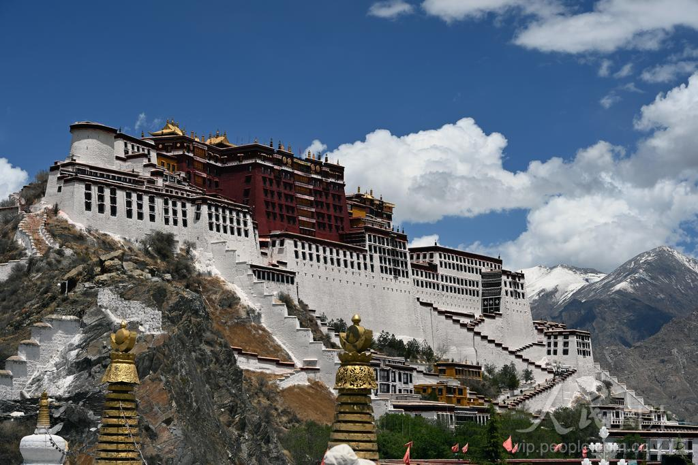
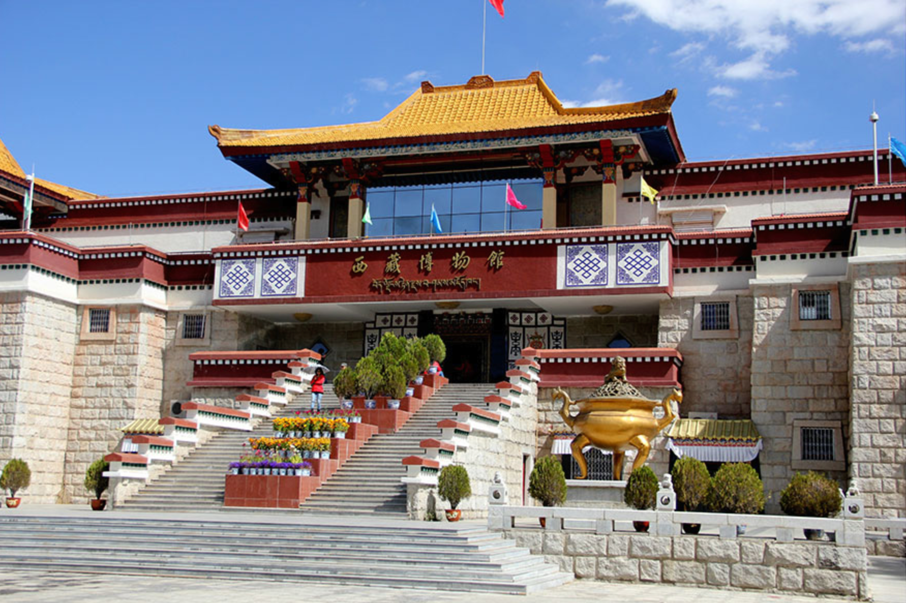
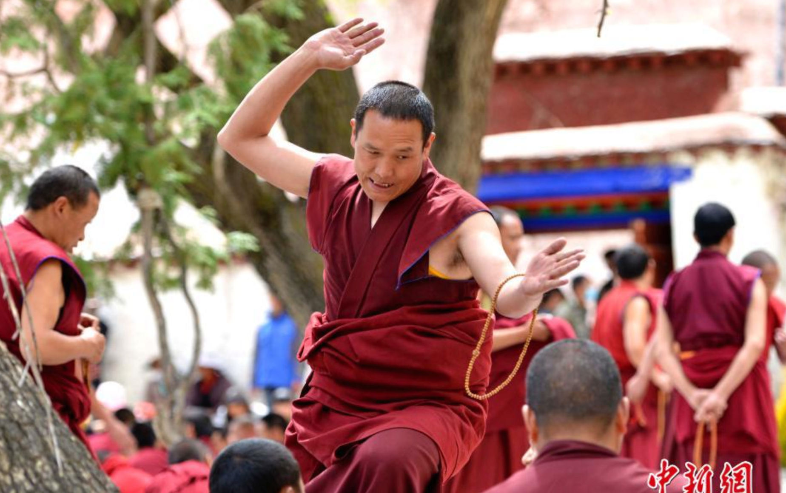
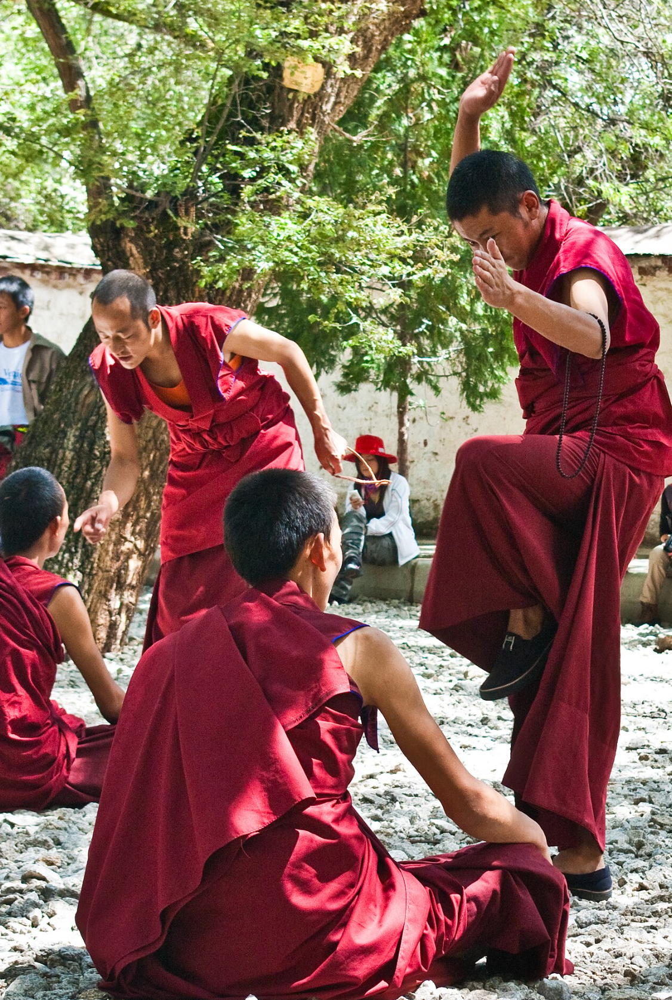
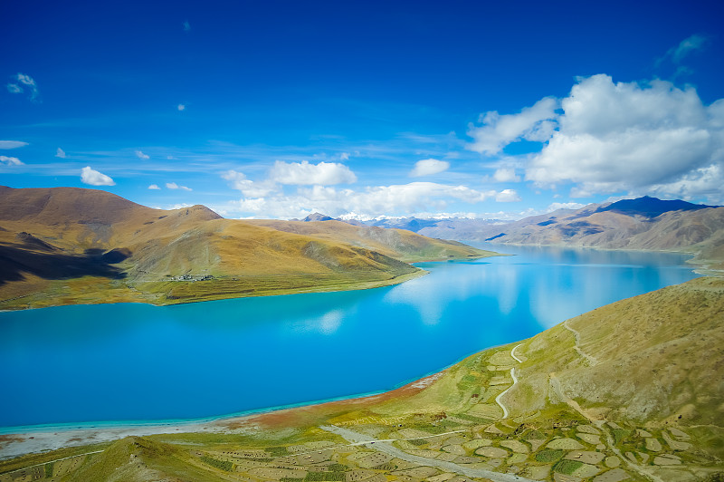
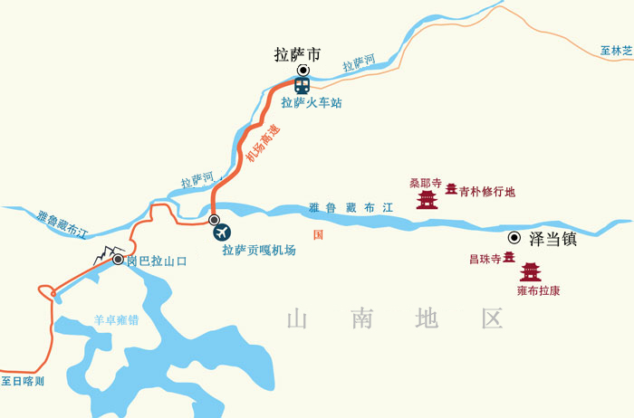
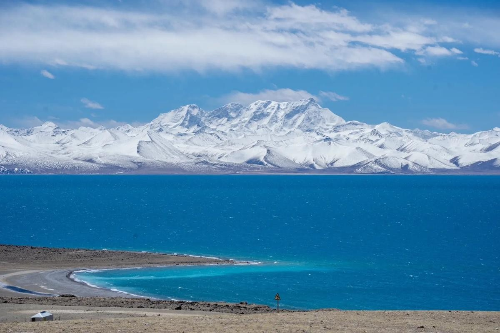
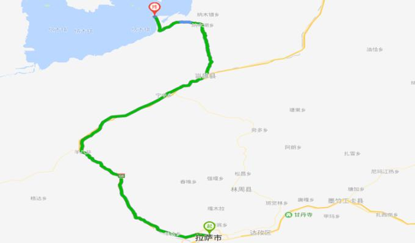
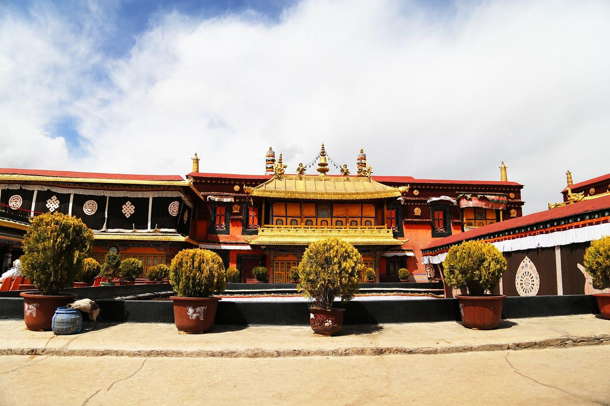

第一次去旅游！
我的想法是整体放松，感受人文并且把必去的景点逛了。行程安排不会太慢，也不会定死，会有大致的每天计划，但如果遇到不可抗力因素或者身体不舒服啥的就临时改一下行程；
到了拉萨之后要行动迟缓一点，别着急，也别太激动；拉萨紫外线很强，每天都要涂防晒；

藏装拍照：安排在过林卡之后或10.6日大昭寺；
备选：色拉寺（50元），15:00 - 藏传佛教辩经，但要爬山，距离较远，且辩经不是每天都有；



随行人员：两个湖需要司机，熟悉路况；
物品准备：晕车药、便携氧气瓶；


随行人员：两个湖需要司机，熟悉路况；
物品准备：晕车药、便携氧气瓶；围巾(可选)、手套(可选)、帽子(可选)
备选方案：若身体不适或天气不佳，可改为市区转转



10月拉萨昼夜温差比较大，大约在 10–15℃ 左右，白天基本上长袖，晚上出门要穿冲锋衣或者羽绒服。
| 时段 | 气温 | 穿着建议 |
|---|---|---|
| 白天（9–18点） | 16–22℃，阳光强烈 | 长袖T恤/薄卫衣 + 冲锋衣外壳 |
| 早晚（18点–次日9点） | 5–10℃，偏冷 | 加抓绒内胆/薄羽绒服 |
| 羊湖/纳木措/文成公主 | 0–8℃，山口更冷 | 厚羽绒服 + 围巾 + 手套 + 帽子 |
穿衣原则：
✅ 西藏博物馆：免费，提前7天预约；
✅ 布达拉宫：10.6日已预约1号线；
✅ 与司机沟通，定好时间
日常预防要点：
| 类别 | 物品 |
|---|---|
| 证件财物 | 身份证、学生证、银行卡、少量现金（部分地方信号差） |
| 衣物 | 三合一冲锋衣、薄羽绒服、速干内衣×2、抓绒衣、长裤×2、保暖帽、围巾、手套、舒适徒步鞋、拖鞋 |
| 防晒护肤 | 防晒霜SPF50+、润唇膏、墨镜、遮阳帽、保湿面霜（高原极干燥） |
| 药品 | 布洛芬、葡萄糖口服液、便携氧气瓶×2、肠胃药、感冒药、创可贴 |
| 电子设备 | 手机、充电宝（低温耗电快）、相机、充电器、耳机 |
| 其他 | 保温杯、雨伞/雨衣、湿巾、纸巾、零食干粮、双肩小包 |
| 可能风险 | 解决方式 |
|---|---|
| 纳木措/羊湖遇大雪封路 | 提前看天气预报，备选方案改市区景点，别硬走 |
| 钱包/身份证丢失 | 身份证拍照存手机云端，丢了找酒店开证明，去派出所补办临时证件 |
| 盘山路晕车 | 提前半小时吃晕车药，坐前排，备垃圾袋和热水 |
| 手机没信号/迷路 | 提前下载离线地图，记好酒店电话，结伴行动别单独走远 |
| 天气突变（下雨、降温、刮风） | 带冲锋衣/雨衣，关注天气预报，适时调整行程，遇恶劣天气改市区 |
| 高反不舒服（头痛、气短、睡不好） | 多休息、喝热水、少量吸氧，一般1-2天就适应了，持续不缓解再去医院 |
| 感冒 | 及时吃药、多喝水、注意保暖，别让感冒加重，严重了及时就医 |